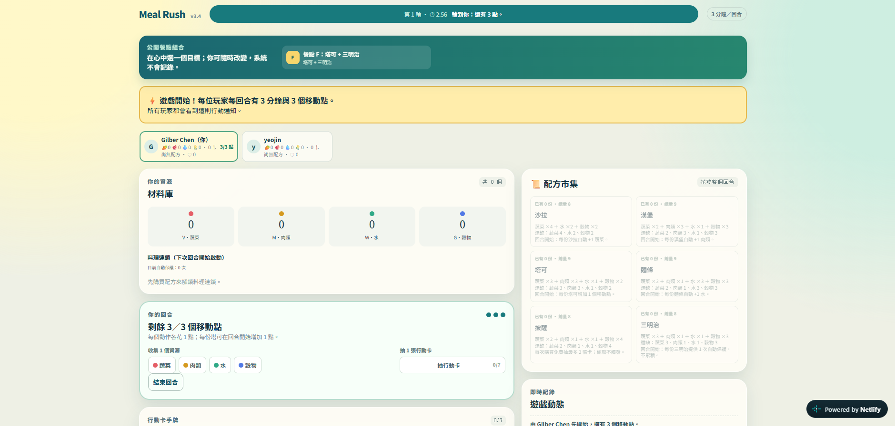

Meal Rush
A simple game I built with ChatGPT for an AI competition. In this multiplayer cooking game, players collect ingredients and complete recipes.

Ideas into action
A place for the things I build and the problems I explore.
A simple game I built with ChatGPT for an AI competition. In this multiplayer cooking game, players collect ingredients and complete recipes.
